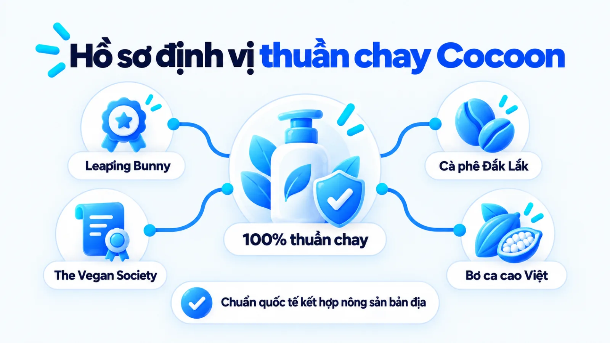
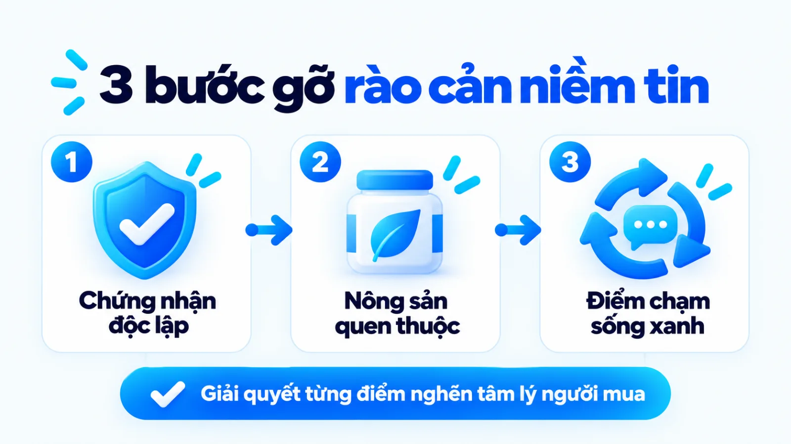
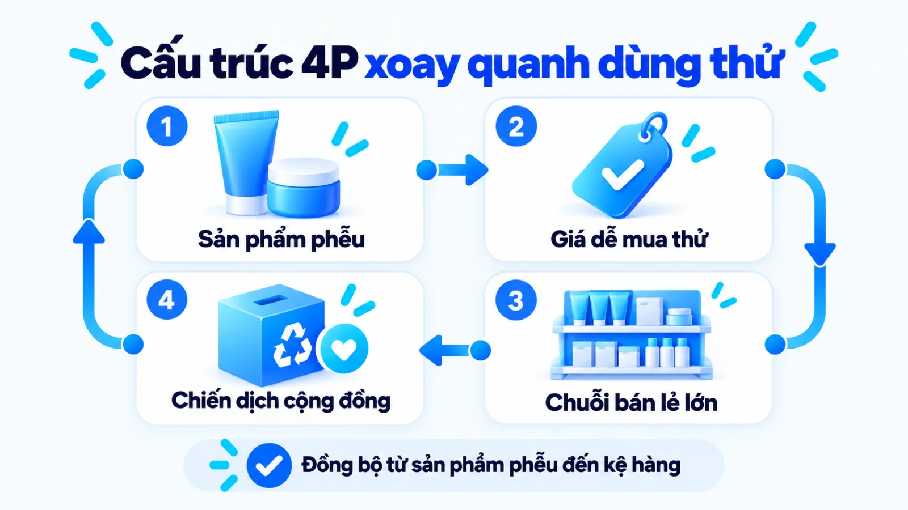
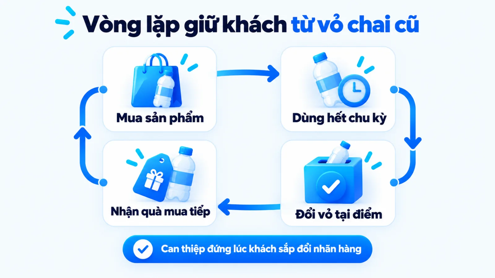
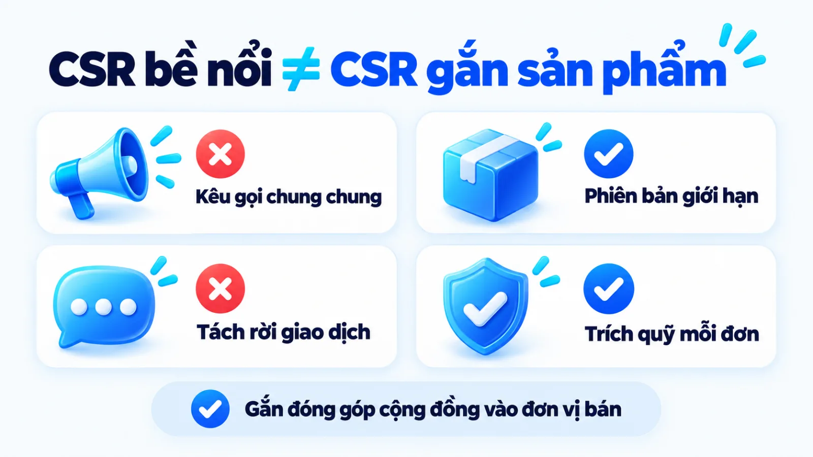
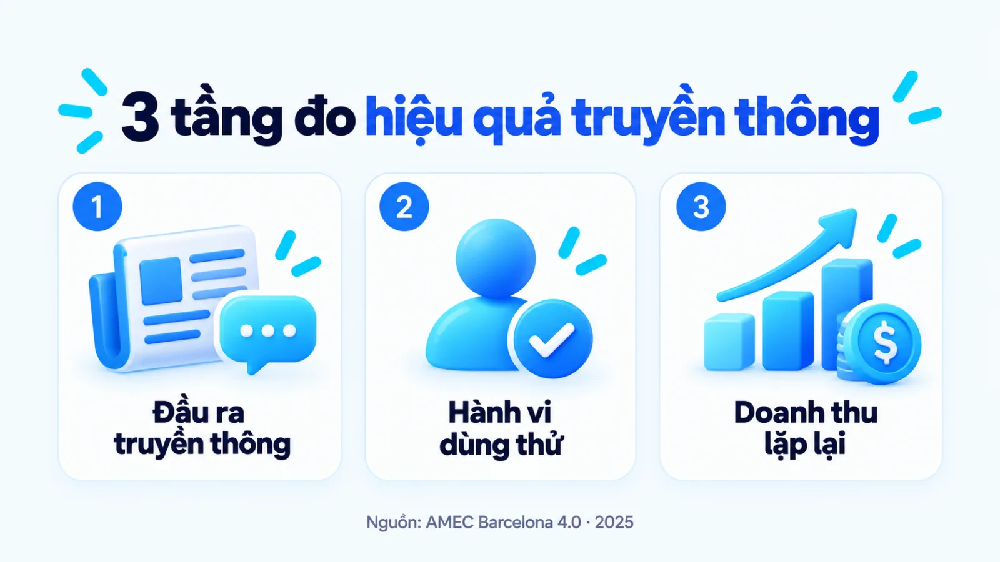
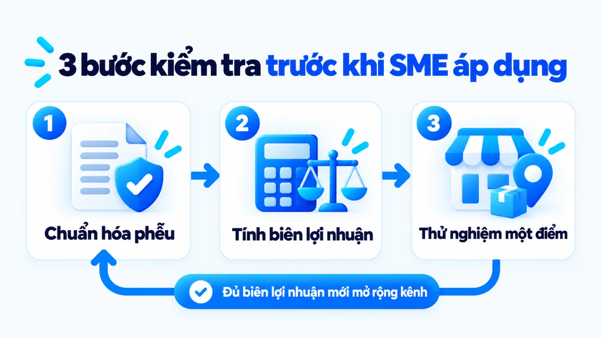

Chiến lược marketing của Cocoon và bài học SME
Chiến lược marketing của Cocoon là trường hợp một thương hiệu mỹ phẩm nội địa đi sau định nghĩa lại tiêu chí cạnh tranh bằng cách kết hợp chứng nhận thuần chay quốc tế với nguồn nông sản bản địa Việt Nam. Khi quan sát độ phủ của nhãn hàng trên các chuỗi bán lẻ và mạng xã hội, nhiều doanh nghiệp nhỏ dễ nhìn vào bề nổi của các chiến dịch thu hồi vỏ chai hay thông điệp sống xanh mà bỏ qua nền tảng chuẩn hóa chuỗi cung ứng cùng cấu trúc sản phẩm phễu phía sau. Nếu sao chép máy móc các hoạt động cộng đồng khi chưa có bằng chứng chất lượng độc lập và biên lợi nhuận đủ dày, đội ngũ rất dễ gánh chi phí vận hành lớn mà không giữ được khách mua lặp lại. Tôi là Lê Tuấn Việt, Marketing Leader tại TAKI Group. Trong bài viết này, tôi phân tích hồ sơ dữ kiện công khai của Cocoon, cơ chế phối hợp 4P và ranh giới điều kiện để doanh nghiệp vừa và nhỏ áp dụng đúng nguồn lực.
- Đăng ngày
- Cập nhật

Tóm tắt nhanh
- Chiến lược marketing của Cocoon dịch chuyển cuộc đua từ ngân sách đại sứ sang hệ tiêu chí minh bạch gồm chứng nhận thuần chay quốc tế và nông sản vùng miền Việt Nam.
- Bộ ba chứng nhận Leaping Bunny, The Vegan Society và PETA đóng vai trò bằng chứng bên thứ ba giúp thương hiệu nội địa vượt qua rào cản nghi ngại ở lần mua đầu tiên.
- Mô hình 4P của nhãn hàng dùng sản phẩm làm sạch dễ cảm nhận ở mức giá phổ thông làm phễu mở đường, kết hợp hiện diện tại Guardian, Watsons, Hasaki để củng cố uy tín.
- Theo chuẩn đo lường AMEC Barcelona 4.0, độ thảo luận của các chiến dịch CSR là chỉ số đầu ra truyền thông, chưa tự động chứng minh tỷ lệ giữ chân hay lợi nhuận dài hạn.
Mục lục bài viết8 phần
Chiến lược marketing của Cocoon và hồ sơ dữ kiện
Chiến lược marketing của Cocoon là hệ thống quyết định của một thương hiệu mỹ phẩm nội địa đi sau nhằm định nghĩa lại tiêu chí cạnh tranh thông qua chứng nhận thuần chay quốc tế và nông sản bản địa Việt Nam. Thay vì chạy đua ngân sách đại sứ với các tập đoàn ngoại, nhãn hàng dùng tiêu chuẩn kiểm chứng độc lập để giải bài toán niềm tin ở phân khúc phổ thông.
Hồ sơ dữ kiện công khai tại thị trường Việt Nam
Tổ hợp chứng nhận quốc tế và vùng nguyên liệu bản địa của Cocoon
Theo thông tin công bố năm 2024 trên trang chủ Cocoon Vietnam thuộc Công ty TNHH Mỹ phẩm Nature Story, thương hiệu cam kết sử dụng 100% nguyên liệu có nguồn gốc thực vật và không thử nghiệm trên động vật (số do bên triển khai tự công bố về thành phần sản phẩm). Bài viết ngày 12/01/2022 trên Báo Tuổi Trẻ ghi nhận trong năm 2020, nhãn hàng đạt chứng nhận không thử nghiệm trên động vật và thuần chay thuộc chương trình Beauty Without Bunnies của PETA (tổ chức bảo vệ quyền lợi động vật), đồng thời trở thành thương hiệu Việt Nam đầu tiên được chấp thuận trong chương trình Leaping Bunny. Hồ sơ toàn cầu từ năm 2020 của Cruelty Free International tại Vương quốc Anh cũng xác nhận pháp nhân The Cocoon Original Vietnam đáp ứng quy trình kiểm soát chuỗi cung ứng nguyên liệu định kỳ.
- 100%
- Cam kết nguyên liệu thực vật tự công bố trên website hãng năm 2024
- 2020
- Cột mốc đạt chứng nhận Leaping Bunny và PETA theo Báo Tuổi Trẻ
- 4/2021
- Thời điểm triển khai thu hồi vỏ chai cũ theo VnExpress Ngôi Sao

Bối cảnh thị trường và bài toán người đi sau
Trên thị trường chăm sóc cá nhân tại Việt Nam, các thương hiệu nội địa thường đứng trước hai áp lực lớn: ở phân khúc trung và cao cấp, các tập đoàn đa quốc gia nắm lợi thế về công nghệ phòng thí nghiệm và ngân sách quảng cáo đại chúng; ở phân khúc giá rẻ, người tiêu dùng lại mang tâm lý e ngại do từng gặp các sản phẩm không rõ nguồn gốc. Khi bước vào thị trường với vị thế người đi sau, việc tiếp tục nói rằng sản phẩm của mình tốt hơn hoặc rẻ hơn rất khó tạo ra lợi thế bền vững.
Để thoát khỏi thế kẹt này, doanh nghiệp cần thiết kế một hệ quy chiếu mới tương tự cách chọn góc tiếp cận nội dung khác biệt trên trang kết quả tìm kiếm. Thay vì đối đầu trực diện trên sân chơi hóa mỹ phẩm công nghiệp, Nature Story chọn ngách vegan cosmetics (mỹ phẩm thuần chay), nơi các đối thủ ngoại có mặt tại Việt Nam thời điểm năm 2020 chưa kết hợp sâu với câu chuyện văn hóa và nông sản địa phương.
Hệ tiêu chí thuần chay và nông sản bản địa
Điểm đáng chú ý trong định vị của nhãn hàng là sự kết hợp giữa tiêu chuẩn khắt khe của thế giới và chất liệu gần gũi của Việt Nam. Theo bộ tiêu chuẩn cập nhật năm 2024 của The Vegan Society tại Vương quốc Anh, nhãn chứng nhận hoa hướng dương đòi hỏi từng mã sản phẩm đăng ký tuyệt đối không chứa thành phần có nguồn gốc động vật và không thử nghiệm trên động vật ở mọi công đoạn phát triển.
Khi ghép khung tiêu chuẩn quốc tế này với danh mục nông sản Việt Nam được niêm yết năm 2024 như cà phê Đắk Lắk, bơ ca cao Tiền Giang, hoa hồng Cao Bằng, bí đao và vỏ bưởi, thương hiệu đã chuyển hóa một khái niệm kỹ thuật xa lạ thành lợi ích dễ hình dung. Dù vậy, cần lưu ý rằng các chứng nhận trên xác thực đạo đức sản xuất và nguồn gốc thực vật, chứ không tự động chứng minh hiệu quả điều trị da liễu vượt trội hay thị phần dẫn đầu toàn ngành.
Cơ chế hành vi giúp Cocoon gỡ rào cản niềm tin
Cocoon tháo gỡ tâm lý e ngại mỹ phẩm nội địa của nhóm khách hàng mua sớm qua ba cơ chế hành vi nối tiếp nhau: dùng tổ chức quốc tế bảo chứng độ an toàn, dùng tên vùng nguyên liệu quen thuộc để hạ rào cản dùng thử và dùng hoạt động môi trường để duy trì tương tác. Ba cơ chế vận hành cốt lõi này được tóm lược trong các thẻ dưới đây:
- Bảo chứng độc lập: Chuyển giao uy tín từ các tổ chức kiểm định quốc tế sang nhãn hàng nội địa để giảm rủi ro cảm nhận ở lần mua đầu.
- Neo vùng nguyên liệu: Ghép tên địa danh nông sản quen thuộc với hoạt chất chuẩn hóa để khách hàng dễ hình dung công dụng ngay tại quầy kệ.
- Biểu tượng lối sống: Biến hành vi tiêu dùng mỹ phẩm thành tuyên ngôn sống xanh giúp người mua trẻ thể hiện bản sắc cá nhân trên mạng xã hội.

Chứng nhận quốc tế thay cho lời tự cam kết
Trong ngành mỹ phẩm và chăm sóc sức khỏe, rào cản lớn nhất ngăn khách hàng rút ví cho một thương hiệu mới là chi phí rủi ro trên làn da. Nhiều doanh nghiệp nhỏ thường mắc lỗi tự khen sản phẩm của mình an toàn, thiên nhiên hay lành tính, dẫn tới việc bị người mua đánh đồng với hiện tượng greenwashing (tẩy xanh, tức truyền thông xanh bề nổi nhưng thiếu căn cứ kiểm chứng).
Việc in biểu tượng con thỏ Leaping Bunny hoặc hoa hướng dương của The Vegan Society lên bao bì hoạt động như một cơ chế chuyển giao niềm tin. Ví dụ biên tập, không phải kết quả khách hàng thật: khi một nhân viên văn phòng đứng trước kệ hàng và cầm hũ tẩy da chết mới, người đó không có thiết bị kiểm tra công thức bên trong, nhưng logo chứng nhận quốc tế giúp họ tự trả lời rằng sản phẩm đã qua một vòng rà soát độc lập trước khi lên kệ.
Nguyên liệu vùng miền giảm rào cản dùng thử
Nếu chứng nhận quốc tế giải quyết phần lý tính về độ an toàn, thì tên gọi nông sản bản địa lại giải quyết phần cảm nhận trực quan. Những nguyên liệu như vỏ bưởi gội đầu, bí đao làm dịu da hay hạt cà phê Đắk Lắk vốn đã nằm sẵn trong ký ức sinh hoạt của người Việt, nên đội ngũ marketing không tốn quá nhiều chi phí giáo dục thị trường về công dụng cơ bản của nguyên liệu.
Tuy nhiên, sự khác biệt giữa một thương hiệu mỹ phẩm đóng gói bài bản và sản phẩm thủ công tự nấu nằm ở khả năng chuẩn hóa hoạt chất. Nông sản vùng miền chỉ làm tròn vai trò thu hút sự chú ý ban đầu; để khách hàng không rời bỏ sau vài tuần sử dụng, công thức sản phẩm phải kết hợp thêm các hoạt chất khoa học ổn định giữa các lô sản xuất.
Cộng đồng sống xanh thúc đẩy hành vi mua lặp
Ở lớp hành vi thứ ba, quyết định chọn mỹ phẩm thuần chay còn gắn với nhu cầu thể hiện giá trị bản thân của tệp khách hàng trẻ tại các đô thị lớn. Cũng giống như việc chọn một chiếc túi vải tái chế thay cho túi nilon trong giao tiếp hàng ngày, việc đặt một lọ mỹ phẩm có thông điệp bảo vệ động vật trên bàn làm việc hay chia sẻ lên mạng xã hội mang lại giá trị biểu tượng rõ rệt.
Phép đối chiếu với túi vải tái chế ở trên chỉ dùng để tách lớp giá trị biểu tượng khỏi lớp công năng vật lý, không thay thế cho dữ liệu khảo sát động cơ mua hàng thực tế. Ngoài ra, cơ chế này phát huy tác dụng mạnh nhất ở phân khúc người mua trẻ nhạy cảm với chủ đề môi trường; với nhóm khách hàng lớn tuổi ưu tiên đặc trị lão hóa chuyên sâu, yếu tố thuần chay chưa chắc là tiêu chí quyết định.
Phân tích 4P của Cocoon từ định vị đến thực thi
Mô hình 4P của Cocoon được thiết kế đồng bộ quanh định vị thuần chay nội địa: danh mục sản phẩm dẫn đường bằng dòng làm sạch dễ cảm nhận, mức giá phổ thông hạ ngưỡng dùng thử, hiện diện dày tại chuỗi bán lẻ chuẩn mực và xúc tiến tập trung vào trách nhiệm xã hội. Bảng dưới đây phân tích bốn trụ cột trong mô hình 4P (Product là sản phẩm, Price là giá, Place là phân phối, Promotion là xúc tiến) của nhãn hàng:
| Trụ cột 4P | Quyết định triển khai của Cocoon | Cơ chế hỗ trợ định vị thuần chay |
|---|---|---|
| Product (Sản phẩm) | Phát triển dòng làm sạch, dưỡng ẩm từ cà phê Đắk Lắk, bí đao, vỏ bưởi, hoa hồng Cao Bằng | Chọn sản phẩm phễu dễ cảm nhận mùi hương và kết cấu ngay lần đầu để tạo niềm tin nhanh |
| Price (Giá bán) | Định giá ở phân khúc phổ thông, dễ tiếp cận với học sinh, sinh viên và nhân viên văn phòng | Hạ thấp chi phí rủi ro khi mua thử, giúp khách hàng dễ chuyển từ tò mò sang chốt đơn |
| Place (Phân phối) | Phủ sóng website, sàn thương mại điện tử và các chuỗi Guardian, Watsons, Hasaki | Mượn tiêu chuẩn kiểm duyệt đầu vào của chuỗi bán lẻ quốc tế để bảo chứng uy tín |
| Promotion (Xúc tiến) | Tập trung chiến dịch thu hồi vỏ chai cũ, phiên bản giới hạn cùng AAF và nội dung giáo dục | Biến cam kết đạo đức thương hiệu thành điểm chạm trải nghiệm thực tế thay vì khẩu hiệu |
Bảng phân tích trên tổng hợp từ thông tin danh mục sản phẩm và kênh bán công bố tới năm 2025; dữ liệu công khai không bao gồm cơ cấu chi phí sản xuất, mức chiết khấu cho từng chuỗi bán lẻ hay biên lợi nhuận ròng trên mỗi đơn vị.

Product và Price: Chất lượng chuẩn hóa, giá dễ thử
Khi quan sát cách nhiều thương hiệu mỹ phẩm mới ra mắt, không ít chủ doanh nghiệp chọn làm ngay các dòng tinh chất đặc trị đắt tiền vì kỳ vọng biên lợi nhuận cao trên từng đơn hàng. Ngược lại, trong hệ thống marketing tổng thể của Cocoon, nhãn hàng đẩy mạnh các dòng sản phẩm làm sạch và chăm sóc cơ bản như tẩy da chết cà phê Đắk Lắk hay nước dưỡng tóc tinh dầu bưởi ở mức giá phổ thông.
Lựa chọn này giải quyết đúng bài toán tâm lý của người mua lần đầu. Một hũ tẩy da chết cơ thể cho phép người dùng cảm nhận ngay mùi hương cà phê, bơ ca cao Tiền Giang và độ mịn của da chỉ sau một lần tắm, trong khi một lọ kem trị nám cần nhiều tuần mới thấy sự thay đổi. Tôi ưu tiên thiết kế một sản phẩm mở đường có thời gian kiểm chứng trải nghiệm ngắn và tần suất tiêu hao đều đặn trước khi mở rộng sang các dòng giá cao, vì dòng tiền từ sản phẩm phễu mới giữ cho cỗ máy vận hành sống sót.
Place và Promotion: Đa kênh gắn với chiến dịch CSR
Về phân phối, bài tổng hợp thị trường mỹ phẩm thuần chay năm 2025 trên VnExpress Ngôi Sao ghi nhận sản phẩm Cocoon hiện diện rộng rãi tại các chuỗi cửa hàng sức khỏe và sắc đẹp như Guardian, Watsons và Hasaki bên cạnh kênh trực tuyến. Nếu đặt cạnh chiến lược marketing của Apple vốn ưu tiên kiểm soát trải nghiệm cao cấp qua hệ thống bán lẻ trực tiếp, Cocoon lại cần mạng lưới chuỗi bán lẻ hiện đại để người mua có thể mở nắp ngửi thử mùi hương và kiểm tra kết cấu trực tiếp.
Điểm đánh đổi mà doanh nghiệp vừa và nhỏ phải nhìn thấy là việc đưa hàng vào các chuỗi bán lẻ lớn luôn đi kèm chiết khấu thương mại, phí trưng bày kệ hàng và áp lực tồn kho. Nếu tốc độ xoay vòng sản phẩm tại điểm bán chưa đủ nhanh hoặc biên lợi nhuận gộp mỏng, độ phủ quầy kệ rộng có thể trở thành gánh nặng tài chính thay vì động lực tăng trưởng.
Chiến dịch marketing của Cocoon tạo hiệu ứng gì
Các chiến dịch marketing của Cocoon biến thông điệp bảo vệ môi trường và động vật thành cơ chế vận hành có điểm chạm cụ thể: chương trình thu hồi vỏ chai cũ kéo khách hàng quay lại điểm bán, còn phiên bản giới hạn hợp tác cùng Tổ chức Động vật Châu Á gắn mỗi giao dịch với một khoản đóng góp bảo tồn.
Tình huống đối chiếu: Ví dụ biên tập, không phải kết quả khách hàng thật
Sai lầm sao chép bề nổi CSR và cách gắn hoạt động cộng đồng vào vòng lặp mua lại
Một nhãn hàng chăm sóc cá nhân quy mô nhỏ tại Thành phố Hồ Chí Minh (ví dụ biên tập, không phải kết quả khách hàng thật) học theo ý tưởng sống xanh bằng cách phát động chương trình gửi vỏ chai rỗng qua bưu điện để nhận một sản phẩm mới miễn phí. Do giá trị đơn hàng trung bình thấp và không có điểm thu gom sẵn, phí vận chuyển hai chiều cùng chi phí nhân sự kiểm đếm đã vượt quá lợi nhuận gộp của cả đợt bán. Khi điều chỉnh lại, đội ngũ bỏ hình thức gửi bưu điện lẻ, chuyển sang tặng mã giảm giá trực tiếp cho đơn hàng kế tiếp khi khách mang vỏ cũ tới quầy hợp tác cố định, giúp kiểm soát định mức chi phí trên từng giao dịch lặp lại.

Thu hồi vỏ chai cũ để tăng tần suất quay lại
Theo ghi nhận năm 2025 trên chuyên trang Ngôi Sao của VnExpress, chương trình thu hồi vỏ chai cũ đổi quà xanh được Cocoon triển khai từ tháng 4/2021. Dưới góc nhìn hành vi tiêu dùng, thời điểm khách hàng dùng cạn một lọ mỹ phẩm chính là lúc họ dễ bị quảng cáo của đối thủ thu hút để đổi sang dùng thử một nhãn hiệu mới.
Việc thiết lập các điểm thu hồi vỏ chai tạo ra một lý do hợp lý để người dùng giữ lại bao bì rỗng và quay lại đúng điểm chạm của thương hiệu khi sản phẩm hết. Tuy nhiên, bài báo trên VnExpress Ngôi Sao chỉ ghi nhận hoạt động cộng đồng và độ phủ kênh, không công bố số liệu kiểm toán về tỷ lệ khách hàng đổi vỏ tiếp tục mua đơn hàng trả phí tiếp theo.
Đồng hành tổ chức bảo tồn để giữ chân người mua
Bên cạnh hoạt động tái chế bao bì, bài viết ngày 12/01/2022 trên Báo Tuổi Trẻ cho biết từ cuối năm 2021, Cocoon hợp tác cùng AAF (Animals Asia Foundation, tức Tổ chức Động vật Châu Á) phát hành dòng sản phẩm phiên bản giới hạn để trích một khoản cố định trên mỗi sản phẩm bán ra vào quỹ bảo vệ gấu tại Việt Nam (số do bên triển khai tự công bố, chưa phản ánh tổng doanh thu toàn công ty). Theo thông tin cập nhật năm 2024 từ Tổ chức Động vật Châu Á, nguồn tài trợ xã hội hóa và sự đồng hành truyền thông của các doanh nghiệp đối tác là nguồn lực quan trọng duy trì trung tâm cứu hộ gấu tại Việt Nam.
Cơ chế đáng học ở đây là cách gắn trực tiếp khoản đóng góp xã hội vào từng đơn vị sản phẩm phiên bản giới hạn (Cause-Related Marketing, tức tiếp thị gắn với trách nhiệm xã hội), thay vì chỉ đăng bài kêu gọi chung chung. Dù vậy, tại sao nhiều doanh nghiệp cũng làm chiến dịch thiện nguyện nhưng chỉ nhận về lượt thả tim mà không ra đơn? Nút thắt nằm ở chỗ hoạt động bảo tồn động vật của Cocoon khớp hoàn toàn với định vị cốt lõi không thử nghiệm trên động vật từ đầu, nên khi triển khai qua chiến lược digital marketing, người mua cảm nhận được sự nhất quán chứ không thấy gượng ép.

Bằng chứng công khai và giới hạn dữ liệu của case
Tài liệu công khai xác nhận rõ các cột mốc chứng nhận quốc tế, danh mục nông sản bản địa và cơ chế trích quỹ theo sản phẩm của Cocoon, nhưng chưa có báo cáo kiểm toán độc lập nào công bố tổng doanh thu, thị phần hay tỷ lệ mua lặp lại toàn hệ thống. Bảng đối chiếu ba cột dưới đây tách bạch dữ kiện đã xác minh với phần diễn giải cơ chế và giới hạn dữ liệu:
| Dữ kiện nguồn xác nhận | Diễn giải cơ chế | Giới hạn và khả năng khác |
|---|---|---|
| Chứng nhận quốc tế | Đạt PETA, Leaping Bunny năm 2020 và đăng ký The Vegan Society giúp gỡ rào cản niềm tin ban đầu | Xác thực đạo đức và nguồn gốc thực vật, không bảo chứng hiệu quả điều trị cho mọi cơ địa da |
| Nông sản và kênh bán | Nguyên liệu Đắk Lắk, Tiền Giang, Cao Bằng kết hợp kệ hàng Guardian, Watsons, Hasaki tăng mua thử | Độ phủ chuỗi bán lẻ không phản ánh biên lợi nhuận ròng sau khi trừ chiết khấu thương mại |
| Chiến dịch cộng đồng | Thu hồi vỏ chai từ tháng 4/2021 và trích quỹ cùng AAF giúp tăng tương tác và thiện cảm | Theo chuẩn AMEC 2025, độ phủ truyền thông chưa chứng minh tỷ lệ giữ chân khách dài hạn |
| Cam kết 100% thuần chay | Thông điệp nhất quán trên website năm 2024 giúp định hình rõ phân khúc khách hàng mục tiêu | Số tự công bố về thành phần, không đi kèm báo cáo kiểm toán doanh thu hay thị phần ngành |
Khi đọc bảng đối chiếu trên, người phụ trách marketing cần tránh lấy các con số doanh thu hoặc phần trăm tăng trưởng truyền miệng trên các trang tổng hợp thứ cấp làm căn cứ lập kế hoạch, vì những con số đó không có nguồn gốc kiểm toán và phạm vi đo rõ ràng.
Theo bộ nguyên tắc đo lường truyền thông quốc tế Barcelona Principles 4.0 công bố tháng 6/2025 của AMEC (Hiệp hội Quốc tế về Đo lường và Đánh giá Truyền thông), người làm nghề phải phân tách rạch ròi giữa chỉ số đầu ra truyền thông (outputs như số bài báo, lượt thảo luận chiến dịch) với sự thay đổi nhận thức, hành vi (outtakes, outcomes) và tác động tài chính của tổ chức. Một chiến dịch CSR có nhiều lượt chia sẻ cho thấy thông điệp chạm đúng mối quan tâm xã hội, nhưng hiệu quả kinh doanh bền vững vẫn phải được kiểm tra qua tỷ lệ mua lại sau khi đợt truyền thông kết thúc.

Bài học từ chiến lược marketing của Cocoon cho SME
Doanh nghiệp vừa và nhỏ không nên sao chép nguyên bản quy mô chiến dịch CSR hay độ phủ chuỗi bán lẻ của Cocoon, mà cần học cơ chế chọn một tiêu chí kiểm chứng được để làm điểm tựa định vị. Bảng chuyển giao dưới đây tổng hợp ba bài học từ chiến lược marketing của Cocoon kèm điều kiện áp dụng, ngoại lệ đảo chiều và bước thử nhỏ:
| Bài học cơ chế | Điều kiện phù hợp và ngoại lệ đảo chiều | Việc thử nhỏ và tín hiệu quan sát |
|---|---|---|
| Bảo chứng bên thứ ba | Hợp ngành cần niềm tin an toàn; đảo chiều khi khách chỉ mua vì giá rẻ nhất hoặc giao tức thì | Hoàn thiện hồ sơ kiểm nghiệm cho 1 sản phẩm chủ lực, gắn lên trang đích và đo tỷ lệ chuyển đổi |
| Sản phẩm phễu mở đường | Hợp hàng tiêu hao nhanh, dễ thấy kết quả bề mặt; đảo chiều với dịch vụ chu kỳ mua dài cần tư vấn | Đóng gói quy cách dùng thử vừa túi tiền và theo dõi tỷ lệ khách quay lại mua cỡ lớn trong 60 ngày |
| Gắn CSR vào mua lặp | Hợp khi biên lợi nhuận gộp đủ bù chi phí quà; đảo chiều khi điểm bán mỏng làm dội phí vận chuyển | Thử nghiệm ưu đãi giảm giá khi đổi bao bì cũ tại 1 điểm bán cố định trước khi mở rộng toàn kênh |
Bảng chuyển giao trên đóng vai trò khung tham chiếu ban đầu; mỗi doanh nghiệp cần đối chiếu với cấu trúc giá vốn hàng bán và tần suất mua lại thực tế của ngành hàng mình trước khi phân bổ ngân sách.

Điều kiện áp dụng theo nguồn lực và ngành hàng
Khi đưa các nguyên lý trên vào kế hoạch marketing quý tới, chủ doanh nghiệp nhỏ nên đi theo thứ tự từ trong ra ngoài. Trước hết, hãy chọn một dòng sản phẩm có khả năng tạo ấn tượng sử dụng rõ ràng ngay trong tuần đầu tiên và chuẩn hóa hồ sơ kiểm định chất lượng cho riêng dòng đó, đồng thời duy trì giọng thương hiệu nhất quán trên bao bì lẫn kênh tư vấn.
Kinh nghiệm từ các dự án thực tế cho thấy việc tập trung làm tốt trải nghiệm tại điểm chạm cốt lõi luôn mang lại hiệu quả rõ hơn việc dàn trải thông điệp. Chẳng hạn, trong dự án cố vấn Marketing cho Uyên Uyên Mart từ tháng 5/2025 đến tháng 5/2026 do tôi phụ trách, việc tối ưu đồng bộ hoạt động thu hút và trải nghiệm tại điểm bán đã góp phần tăng 45% lượt khách đến cửa hàng và nâng doanh thu toàn hệ thống từ 3 lên 6 tỷ đồng mỗi tháng, tương đương tăng 100% so với cùng kỳ. Kết quả tại Uyên Uyên Mart phản ánh điều kiện vận hành của mô hình bán lẻ tiêu dùng đó, không phải cam kết áp dụng máy móc cho mọi ngành hàng.
Ngoại lệ đảo chiều khi không nên sao chép Cocoon
Không phải mô hình kinh doanh nào cũng thu được lợi ích khi học theo cách định vị thuần chay hoặc triển khai chiến dịch cộng đồng quy mô lớn. Trước khi quyết định đầu tư ngân sách vào hướng đi này, bạn cần dừng lại kiểm tra ba điều kiện loại trừ dưới đây:
- Biên lợi nhuận gộp quá mỏng: Nếu giá vốn sản phẩm và chi phí sàn thương mại điện tử đã chiếm phần lớn doanh thu, việc gánh thêm chi phí quà tặng đổi vỏ chai hoặc chiết khấu chuỗi bán lẻ hiện đại sẽ làm âm dòng tiền vận hành.
- Sản phẩm giải quyết nhu cầu cấp bách thuần công năng: Với các dịch vụ sửa chữa khẩn cấp hoặc vật tư kỹ thuật mua theo thông số, khách hàng ưu tiên tốc độ xử lý và độ chính xác hơn là câu chuyện cảm xúc vùng miền.
- Chuỗi cung ứng chưa ổn định chất lượng giữa các lô: Khi nguyên liệu đầu vào còn phụ thuộc mùa vụ tự nhiên và chưa chuẩn hóa được công thức chiết xuất, đẩy mạnh truyền thông diện rộng sẽ làm bộc lộ nhanh hơn nhược điểm sản phẩm.
Nếu doanh nghiệp đang rơi vào một trong ba trường hợp trên, việc cố dựng một chiến dịch CSR bề nổi chỉ làm phân tán nguồn lực của đội ngũ. Muốn mở rộng truyền thông thì phải khóa chuẩn sản phẩm trước.
Câu hỏi thường gặp về chiến lược marketing của Cocoon
Doanh nghiệp nhỏ có nên làm chứng nhận quốc tế ngay không?
Không cần làm ngay cho toàn bộ danh mục nếu ngân sách ban đầu còn hạn hẹp và quy trình chuỗi cung ứng chưa ổn định. Doanh nghiệp vừa và nhỏ nên hoàn thiện đầy đủ hồ sơ công bố, kiểm nghiệm an toàn trong nước cho một dòng sản phẩm chủ lực trước. Khi sản phẩm đã chứng minh được sức mua lặp lại và cần tiến vào chuỗi bán lẻ hiện đại hoặc xuất khẩu, việc đầu tư chứng nhận quốc tế mới mang lại hiệu quả tương xứng.
Làm sao phân biệt định vị thuần chay thật và greenwashing?
Định vị thuần chay thực chất dựa trên chứng nhận độc lập có kiểm toán nguồn nguyên liệu như Leaping Bunny hay The Vegan Society cùng bảng thành phần minh bạch theo từng mã sản phẩm. Ngược lại, truyền thông xanh bề nổi thường chỉ dùng từ ngữ cảm tính như lành tính, thiên nhiên hoặc đổi vỏ hộp sang màu xanh lá mà không có tổ chức thứ ba xác thực quy trình sản xuất.
Vì sao chiến dịch CSR lan tỏa mạnh nhưng khó tính ROI?
Chiến dịch CSR (trách nhiệm xã hội của doanh nghiệp) thường tạo ra lượng thảo luận và thiện cảm thương hiệu cao trong ngắn hạn, nhưng hành vi mua lặp lại phụ thuộc vào chất lượng sản phẩm và độ tiện lợi của điểm bán. Theo nguyên tắc đo lường truyền thông của AMEC, nếu không gắn mã theo dõi riêng hoặc cơ chế đổi quà trực tiếp trên đơn hàng, doanh nghiệp rất dễ nhầm chỉ số tương tác truyền thông với doanh thu thực tế.
Ngân sách hẹp nên ưu tiên kênh bán lẻ hay sàn trực tuyến?
Doanh nghiệp có ngân sách hẹp nên ưu tiên kênh trực tuyến và mạng xã hội trước để kiểm chứng nhu cầu thực, tối ưu thông điệp và giữ dòng tiền quay vòng nhanh. Việc đưa hàng vào các chuỗi lớn như Guardian, Watsons hay Hasaki chỉ phù hợp khi sản phẩm đã có tốc độ bán tự nhiên ổn định và biên lợi nhuận gộp đủ chi trả chiết khấu kênh phân phối.
Khi nào chương trình thu hồi vỏ chai gây lỗ vận hành?
Chương trình thu hồi bao bì dễ gây lỗ vận hành khi giá trị đơn hàng trung bình thấp, điểm thu gom phân tán và doanh nghiệp phải tự gánh chi phí vận chuyển ngược về kho xử lý. Để tránh rủi ro này, nhãn hàng nhỏ chỉ nên áp dụng đổi vỏ lấy ưu đãi giảm giá cho lần mua kế tiếp ngay tại điểm bán sẵn có thay vì tặng sản phẩm miễn phí tràn lan.
Nông sản bản địa có đủ giữ chân khách mua lặp lại không?
Không, câu chuyện nông sản vùng miền chủ yếu giúp thu hút sự tò mò và giảm rào cản tâm lý ở lần mua thử đầu tiên. Khả năng giữ chân khách hàng mua lặp lại ở chu kỳ thứ hai và thứ ba phụ thuộc vào độ ổn định của công thức hoạt chất, trải nghiệm thực tế trên da và mức giá hợp lý so với sản phẩm thay thế.
Kết luận
Điểm cốt lõi làm nên sức bật trong chiến lược marketing của Cocoon không nằm ở những khẩu hiệu ca ngợi thiên nhiên, mà ở sự kết hợp chặt chẽ giữa bằng chứng chứng nhận quốc tế, sản phẩm phễu từ nông sản bản địa và các điểm chạm cộng đồng gắn liền với chu kỳ mua lặp lại. Ngay trong tuần này, bạn có thể rà soát lại dòng sản phẩm chủ lực của mình để kiểm tra xem lời hứa định vị trên trang đích đã có tài liệu kiểm định bên thứ ba và quy cách dùng thử đủ nhẹ để khách hàng dễ bước qua rào cản đầu tiên hay chưa.
Khi bài toán của doanh nghiệp không chỉ dừng ở việc chỉnh sửa một thông điệp lẻ mà cần kết nối lại từ định vị sản phẩm, cấu trúc giá vốn, kênh phân phối đến hệ thống đo lường chuyển đổi theo chuẩn dự án và bài học thực tế, một khung hoạch định đồng bộ sẽ giúp đội ngũ tránh đốt ngân sách vào các hoạt động bề nổi. Ở thời điểm hiện tại, rào cản lớn nhất khiến khách hàng mục tiêu của bạn chần chừ chưa mua thử nằm ở sự thiếu hụt bằng chứng tin cậy hay ở cấu trúc sản phẩm mở đường?